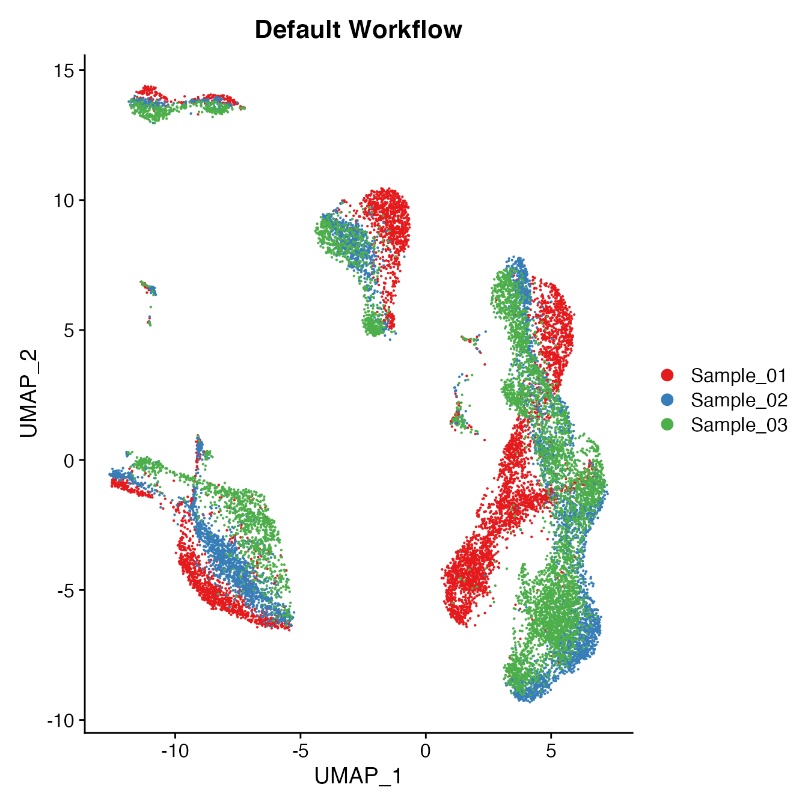
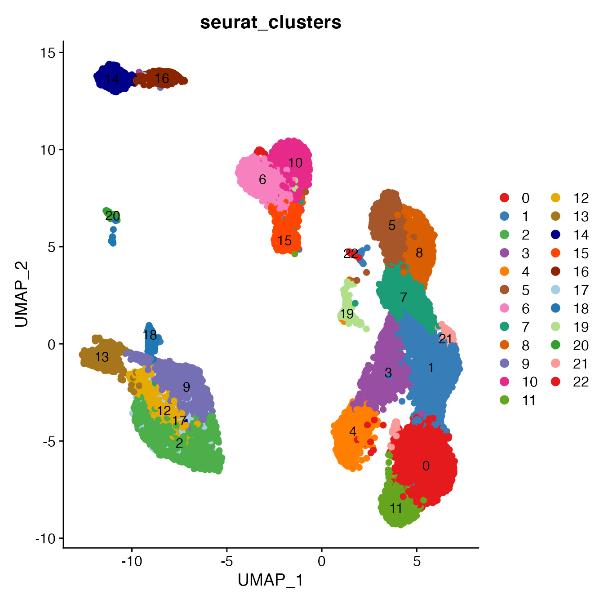
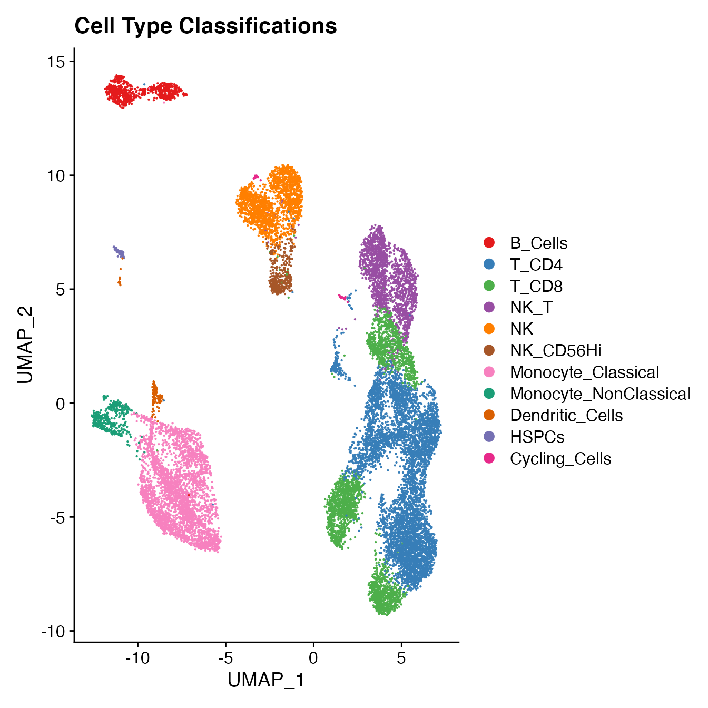

SampleDonor_Effect.Rmd
library(BatchNorm)
# Import unfiltered Seurat object (included with 'BatchNorm' package)
data(PBMCs)
# Run "standard" Seurat workflow:
# Including filtering by mitochondrial percentage (+5 SD)
# Including data normalization, variable gene selection and gene scaling (performed on all samples together)
PBMCs <- PBMCs %>%
MitoFilter() %>%
NormalizeData(normalization.method = "LogNormalize", assay = "RNA", scale.factor = 10000) %>%
NormalizeData(verbose = FALSE, assay = "ADT", normalization.method = "CLR") %>%
FindVariableFeatures(selection.method = "vst", nfeatures = 2000) %>%
ScaleData() %>%
RunPCA(npcs = 30)
## Identify correct numbers of PCs
## (Takes up to 5 minutes. Not run while rendering vignette for time)
# PBMCs.pca.test <- TestPCA(PBMCs)
# PBMCs.pca.test[, 1:20]
## 14 PCs with z > 1
## Proceed with 14 PCs for dimensional reduction & clustering
## Visualize PCs plotted by standard deviation:
ElbowPlot(PBMCs)
PBMCs <- PBMCs %>%
RunUMAP(reduction = "pca", dims = 1:14) %>%
FindNeighbors(reduction = "pca", dims = 1:14) %>%
FindClusters(resolution = .8)## Modularity Optimizer version 1.3.0 by Ludo Waltman and Nees Jan van Eck
##
## Number of nodes: 16946
## Number of edges: 593488
##
## Running Louvain algorithm...
## Maximum modularity in 10 random starts: 0.8927
## Number of communities: 23
## Elapsed time: 2 seconds
UMAPPlot(PBMCs, cols = colors.use, group.by = "orig.ident") + ggtitle("Default Workflow")
GetiLISI(object = PBMCs, nSamples = 3)## [1] 0.8612189
# For complete cell classification workflow see our vignette "Biaxial Gating of a Single Sample"
# More details can be found in figure S3 of our manuscript "Data Matrix Normalization and Merging Strategies Minimize Batch-specific Systemic Variation in scRNA-Seq Data."
UMAPPlot(PBMCs, cols = colors.use, pt.size = 2,
group.by = "seurat_clusters", label = T)
# B_Cells = 14, 16
# T_CD4 = 0, 1, 3, 21, 19
# No TReg cluster (contained within clusters 1 & 3)
# T_CD8 = 4, 7, 11
# NK_T = 5, 8
# NK = 6, 10
# NKCD56Hi = 15
# Monocyte_Classical = 2, 9, 12, 17
# Monocyte_NonClassical = 13
# Dendritic_Cells = 18
# HSPCs = 20
# Cycling_Cells = 22
Idents(PBMCs) <- PBMCs[["seurat_clusters"]]
Idents(PBMCs) <- plyr::mapvalues(Idents(PBMCs), from = c(14, 16, 0, 1, 3, 21, 19,
4, 7, 11, 5, 8, 6, 10,
15, 2, 9, 12,
17, 13, 18,
20, 22),
to = c('B_Cells', 'B_Cells', 'T_CD4', 'T_CD4', 'T_CD4', 'T_CD4', "T_CD4",
'T_CD8', 'T_CD8', 'T_CD8', 'NK_T', 'NK_T', "NK", "NK",
'NK_CD56Hi', 'Monocyte_Classical', 'Monocyte_Classical', 'Monocyte_Classical',
'Monocyte_Classical', 'Monocyte_NonClassical', 'Dendritic_Cells',
'HSPCs', 'Cycling_Cells'))
Idents(PBMCs) <- factor(Idents(PBMCs),
levels = c("B_Cells", "T_CD4", "TReg",
"T_CD8", "NK_T", "NK", "NK_CD56Hi",
"Monocyte_Classical", "Monocyte_NonClassical",
"Dendritic_Cells", "HSPCs", "Cycling_Cells"))
PBMCs[["Cell_Type"]] <- Idents(PBMCs)
UMAPPlot(PBMCs, cols = colors.use, label = F) + ggtitle("Cell Type Classifications")
# PBMC Sample 1
data(PBMC1_Single_ID)
S1cms <- GetCMS(object = PBMCs,
sample.ID = "Sample_01",
reference.ID = PBMC1_Single_ID)
# PBMC Sample 2
data(PBMC2_Single_ID)
S2cms <- GetCMS(object = PBMCs,
sample.ID = "Sample_02",
reference.ID = PBMC2_Single_ID)
# PBMC Sample 3
data(PBMC3_Single_ID)
S3cms <- GetCMS(object = PBMCs,
sample.ID = "Sample_03",
reference.ID = PBMC3_Single_ID)
# Average CMS
mean(c(S1cms, S2cms, S3cms))## [1] 0.09812015